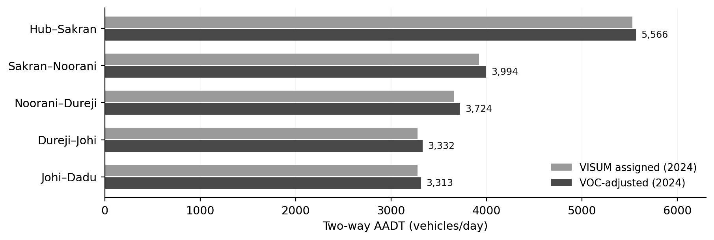
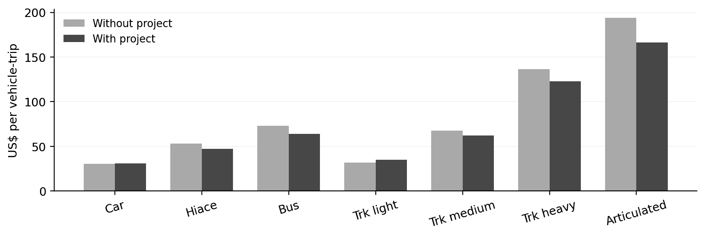
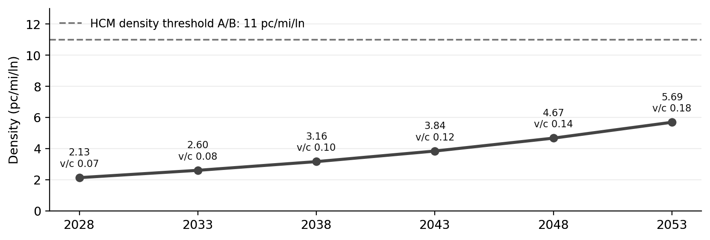

Hub–Dadu Corridor, Pakistan · Proposed M-7 Motorway
How would a new intercity motorway redistribute existing traffic, change travel costs, and perform under long-term demand growth?
I assessed the Hub–Dadu motorway using PTV VISUM 2026 for origin–destination calibration, multiclass equilibrium assignment, and travel-time skims; the HDM-4 Road User Cost Model for vehicle-class operating costs; and HCM-CALC, applying the Highway Capacity Manual’s 7th-edition basic-freeway procedure, for equivalent lane flows, density, and level of service. Classified counts from the NHA-commissioned Hub–Dureji–Dadu traffic survey supplied calibration targets. The network retained M-9, N-5, and N-55 as competing routes to quantify diversion and corridor travel-time changes.
Network modelling and route diversion
The VISUM model comprised 12 traffic analysis zones and separate 12 × 12 daily OD matrices for cars, buses, and heavy-goods vehicles. TFlowFuzzy matrix correction used classified counts from seven selected survey locations. The calibrated matrices were jointly assigned using multiclass user equilibrium and a BPR volume–delay function (α = 0.15; β = 4).
Holding calibrated demand constant between scenarios isolated route redistribution from demand growth. Directional link volumes were aggregated at consistent cross-sections, while travel-time skims quantified changes between strategic origins and destinations.

| OD relation | Existing network | With motorway | Saving |
|---|---|---|---|
| Hub → Dadu | 280.55 min | 144.25 min | 136.30 min |
| Hub → Dureji | 182.11 min | 76.04 min | 106.07 min |
| Karachi → Dadu | 263.82 min | 163.25 min | 100.57 min |
The Hub–Dadu comparison indicated a 48.6% reduction in modelled car travel time. Assigned demand varied along the corridor, with 3,920 vehicles/day on Sakran–Noorani compared with 3,278 toward Johi–Dadu before the cost-response adjustment.
Operating costs and demand response
I mapped the three VISUM assignment classes to seven representative vehicle categories for HDM-4 costing. Financial trip costs incorporated road roughness, alignment, operating speed, and the difference between the 136 km existing and 138 km motorway routes used for the Hub–Dureji cost comparison.

Articulated-truck operating costs fell by 14.33%, while car and light-truck costs increased. Applying an assumed short-run VOC elasticity of −0.5 preserved these opposing responses. The resulting length-weighted corridor demand increased by approximately 1.7%, from 3,495 to 3,555 vehicles/day. This post-assignment adjustment was kept distinct from traffic diversion in VISUM.
Forecast demand and mainline capacity
At the adopted 4% annual growth rate, length-weighted corridor demand rose from 4,159 AADT in the 2028 opening year to 11,086 in 2053. The busiest section within the four-section assessment corridor, Sakran–Noorani, was analysed separately for capacity.
HCM-CALC applied the HCM 7th-edition basic-freeway procedure to the assumed three-lane-per-direction mainline. Directional design-hour demand used K × D = 0.048, with a peak-hour factor of 0.88 and a heavy-vehicle adjustment of 0.535.

In 2053, the controlling section carried 598 vehicles/hour in the design direction, equivalent to 424 passenger cars/hour/lane. The modelled volume–capacity ratio was 0.18, with LOS A in every tested year.
Integrated assessment
The motorway reduced the modelled Hub–Dadu car journey by 136.30 minutes. Operating-cost effects differed by vehicle class: articulated trucks gained a 14.33% reduction, while cars and light trucks incurred increases. The net VOC-based demand response was 1.7%; subsequent 4% annual growth raised corridor demand to 11,086 AADT by 2053. On Sakran–Noorani, the HCM calculation produced a terminal-year density of 5.69 pc/mi/lane and a volume–capacity ratio of 0.18 for the three-lane directional mainline.